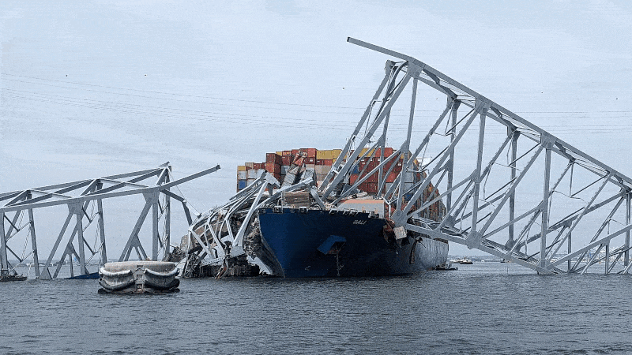

▸ a tribute to the francis scott key bridge

source / image is in the public domain.
on 26 mar 2024, at 1:28 am, a cargo ship from the port of baltimore en route to sri lanka lost control and unfortunately rammed into the 1.6 mile long francis scott key bridge, a vital bridge both for commuters as well as the transport of hazmats. six people are proclaimed dead as of midnight mar 27, the time i'm writing this.
my heart goes out to the people affected. the families that are heartbroken. the rescue workers trying to find them. those on the ship that couldn't regain control. please send prayers.
the bridge was opened in '77. it celebrated its anniversary just three days before the collapse.
39.21841° N, 76.52652° W
this is a personal image driving over the bridge taken 24 nov 2022, heading to a party. i have some fond memories riding over this bridge to make it to a few of my friends' houses. guess we're going to need a new route.